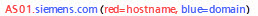
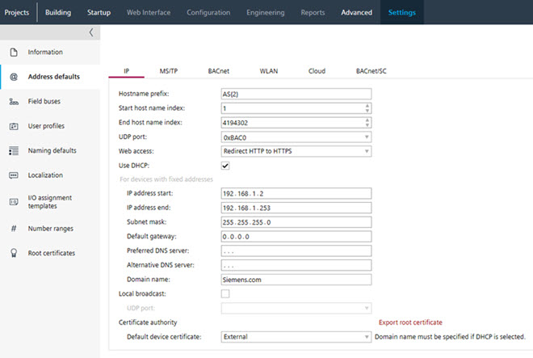
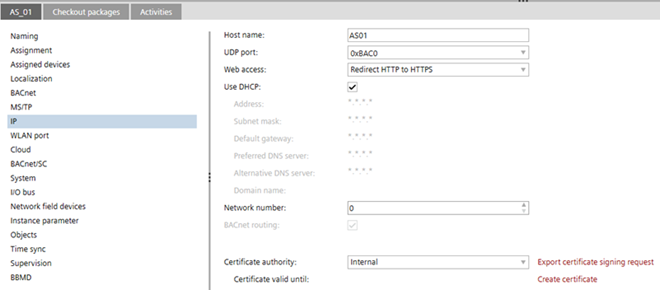
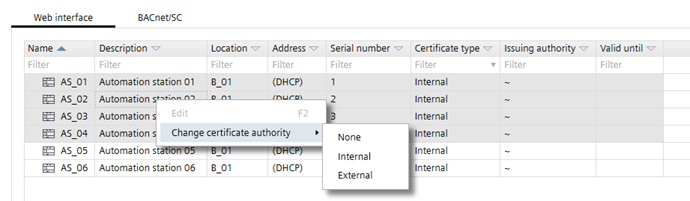

带有 FQDN 和外部 CA 的 Web 证书
如果使用完全限定域名 (FQDN)，例如 AS01.siemens.com ，则设置与 DHCP 设置不同。
FQDN 域名示例：

处理证书时，以下事项很重要：
- Once the certificate is returned from the signing authority, it can only be loaded (full load or Only updated certificates) on the specific device.
- The private key is stored in ABT Site project data at the time the CSR is created. You can only import a signed certificate (as returned from a signing authority) when it matches to that private key.
You should therefore be careful when you create a second CSR for a given device while the signing request is pending. You will not be able to import the signed certificate from the first CSR, because its corresponding private key is no longer available. - If you perform a second export by accident, this CSR must be sent to the signing authority and then imported in ABT Site and loaded to the device.
- If a device needs to be replaced, a new CSR will be required for this device only.
1. Set the domain name for FQDN
- Go to Settings.
- Open the Address defaults task.
- Select the IP tab.
- In the Domain name field, enter the domain name, for example, Siemens.com.

2. Set the properties for each device
- Go to Building.
- Open the Certificates management task.
- Select a device.
- Select the Web Interface tab.
- Do the following for the device version ≤ 1.5:
- Select the IPv4 tab.
- In the Host name field, verify the host name, for example, AS01. This name must be unique within the project.
- Select the Use DHCP check box.
- Do the following for the device version ≥ 1.6:
- Select the Ports / network > LAN > IPv4 tab.
- In the Host name field, verify the host name, for example, AS01. This name must be unique within the project.
- In the Web access drop-down list, select the desired connection type.
- Activate the Use DHCP check box.

- Repeat these steps for each device.
3. Export certificates for signing by the external certification authority.
- The column Serial number is not empty.
- The certificate type is Internal, if the project settings are set to Internal.
- Go to Building.
- Open the Certificates management task.
- Select all or specific devices.
- Select the Web Interface tab.
- Right-click and select Change certificate authority to External.

- Click Export CSR.
Note: If the certificate is exported a second time, a message appears. Cancel the process if you are not aware of the consequences (see explanation above). - Click Open folder.
- A multiple export creates a zip file named as [Project-name_Date_Time].zip. Use the 7-zip File Manager to check the content.
Note: The Windows explorer does not recognize the zip format and creates an error message. - A single export creates two files named as [Project-name_Cert_Host-name_Serial-number_Date_Time].csr and [Project-name_Cert_Host-name_Serial-number _date_time].txt.
Note: Those two files contain the same information, in slightly different formats. Depending on your certification authority, you may want to use one or the other, but typically you will not need both. - The external CSR private key is stored in ABT Site project data and the serial number of the device is stored in the CSR to link the certificate to the serial number of the device.
- Send the file to the signing authority.

证书导出和签名证书导入之间的时间间隔应该非常短，以避免数据不一致并保持设备可访问。
4. Import the signed certificates
- The file from the signing authority is available in one of the supported formats (*.p12, *.pfx, *.cer, *.crt).
- Go to Building.
- Open the Certificates management task.
- Select a device.
- Select the Web Interface tab.
- Click Import external.
- Select the certificate file type Certificate container (*.p12, *.pfx) or Certificate (*.cer, *.crt).
- Select the corresponding signed certificate for this device.
- Click Open.
- The signed certificate is imported into ABT Site.
- Repeat these steps for all required devices.
5. Load the certificates to the device
- An online connection to the device is established.
- A full download with an operational certificate is already performed.
- Go to Startup.
- Open the Configure and download task.
- Select the Engineered devices tab.
- Select the device.
- Right-click and select Only updated certificates or perform a full download.
Downloading an updated certificate to a device - The signed certificate is stored in the device.

- Repeat these steps for all required devices.